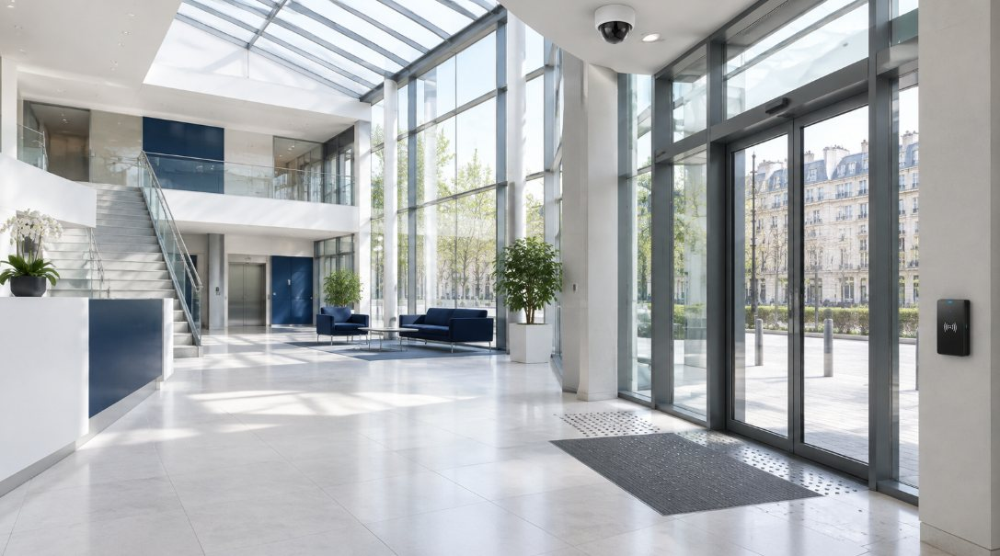

L'entreprise
Des femmes et des hommes des courants faibles, au service des bâtiments qui ne peuvent pas s'arrêter.

Trente ans de réseaux et de sûreté.
Créée en 1996 autour des télécommunications et de la fibre optique, POINTSYS Télécom a élargi son savoir-faire à la sûreté électronique, à la sécurité incendie et à l'aménagement des salles informatiques.
Intégrée au Groupe SITTE, l'entreprise travaille en complémentarité avec Bathelec, spécialiste de l'électricité des bâtiments tertiaires : les maîtres d'ouvrage disposent ainsi d'un lot électricité complet, courants forts et courants faibles.
Depuis Ivry-sur-Seine, nos chargés d'affaires et nos techniciens interviennent dans les huit départements d'Île-de-France, pour l'État, les transports, la santé, l'enseignement, les collectivités et le tertiaire privé.
Création de POINTSYS, spécialiste des télécoms et de la fibre optique.
Intégration au groupe, aux côtés de Bathelec, et recentrage sur les grands comptes publics et privés.
Réseaux, sûreté, sécurité incendie et data centers pour l'État, les transports, la santé et le tertiaire.
100 % disponible.
Accords-cadres pluriannuels
Des équipes qui connaissent vos sites, un interlocuteur stable sur toute la durée du marché.
Sites sensibles et occupés
Confidentialité, habilitations, coupures planifiées : l'activité continue pendant les travaux.
Recettes documentées
Mesures, plans de repérage et DOE remis à chaque réception, pour une exploitation sereine.
Maintenance dans la durée
Contrats préventifs et correctifs pour garder vos systèmes disponibles.
Des compétences reconnues.
Un interlocuteur unique pour les réseaux et la sûreté de vos bâtiments.
Visite, étude et proposition sur demande, sans engagement.